笔记本与数据库介绍
本模块介绍了 Jupyter Notebooks 和 Google Colaboratory，探讨它们的功能与结构，包括代码单元和文本单元。此外，我们还涵盖了用于单细胞数据的关键公共数据库，以及其他包含人类和其他生物基因表达信息的数据库。为了提升学习效果，我们提供了实践练习，帮助用户访问、探索和分析这些数据库，从而培养在生物数据处理方面的核心技能。
你熟悉 Jupyter Notebook 吗？
Jupyter Notebook 是一种交互式文档工具，可以把可执行代码、说明文字、可视化图形以及其他内容整合在同一个文档中。它广泛用于数据科学、机器学习和计算分析，支持多种编程语言，其中最常用的是 Python。直观的交互界面让数据探索、实验记录和实时文档编写变得更简单。
在 notebook 中，文本单元和代码单元承担不同的功能，用来组织和呈现内容：
文本单元
- 文本单元用于添加说明、描述，以及使用 Markdown 或 HTML 进行排版。
- 你可以插入标题、列表、链接、公式和其他元素，用来记录分析过程，并让自己和后续使用者更容易理解你的工作。
- 点击顶部工具栏中的 + Text 按钮
- 在单元中输入文字，并使用 Markdown 语法进行格式设置，例如用 # 表示标题，用 ** 表示加粗，用 * 表示斜体
- 点击单元外部，或按 Shift + Enter ，即可渲染格式化后的文本
添加文本单元：
Jupyter 单元格
代码单元- 代码单元用于编写和执行程序代码，最常见的是 Python 代码。
- 你可以在其中测试算法、处理数据和生成可视化图形；代码运行后的输出会直接显示在该单元下方。
- 点击 notebook 顶部工具栏中的 + Code 按钮，在当前激活单元下方插入一个代码单元。
- 在单元中输入代码，然后按 Shift + Enter 执行。
添加代码单元：
#test python code here
test = 4
print("Hello World")
在这里，我可以书写 漂亮 的文本。
注意事项：
1: 如果你想在这个 notebook 内部查看网页或视频，需要安装下面的浏览器扩展：
Google Chrome 扩展 or Firefox 扩展
2: 如果你想创建带有 R kernel 的 Colab notebook，可以使用下面的链接：
使用 R 的 Colab 或 另一种创建方式
Google colaboratory
Google Colab 是一个免费的云端平台，允许你直接在浏览器中创建、运行和分享 Jupyter notebook。它支持 Python 等语言，并提供 GPU、TPU 等计算资源，因此非常适合机器学习和数据科学任务。
此外，Colab 可以与 Google Drive 集成，便于存储文件和进行实时协作。
探索单细胞 RNA-seq 数据资源库
在本次实践中，我们将探索用于单细胞 RNA-seq 数据分析的在线资源库和工具。我们会浏览多个数据库，包括 (https://www.ebi.ac.uk/gxa/sc/home), Human Cell Atlas Data Portal (https://data.humancellatlas.org/), CELLXGENE (https://cellxgene.cziscience.com/), SRA (https://www.ncbi.nlm.nih.gov/sra), GEO (https://www.ncbi.nlm.nih.gov/geo/), (https://panglaodb.se/), CellType (https://celltype.info/), 和 CellTypist (https://www.celltypist.org/), 学习如何发现和探索单细胞 RNA-seq 数据集。通过这部分动手练习，你将学习如何利用在线资源访问、可视化并解释单细胞 RNA-seq 数据。
学习目标：
- 探索单细胞 RNA-seq 数据资源库和分析工具
- 学习如何访问并可视化单细胞 RNA-seq 数据
- 理解如何解释单细胞 RNA-seq 数据
说明： 本练习适合按照自己的节奏完成；你可以根据自己的进度逐步完成各项操作
Single Cell Expression Atlas
Single Cell Expression Atlas 是一个基于网页的资源库，收录了来自多种生物和组织的大量单细胞 RNA-seq 数据集。用户可以在该平台中探索并比较不同细胞类型、组织和实验条件下的基因表达谱。 实践练习：
1. 探索 Single Cell Expression Atlas 的通用界面：
- 打开 Single Cell Expression Atlas 网站。你可以在自己的浏览器中访问，也可以使用本节 notebook 末尾嵌入的浏览器访问： https://www.ebi.ac.uk/gxa/sc/home
- 这个资源库的一大优势是覆盖了非常广泛的物种，包含动物、植物、真菌和原生生物中的单细胞数据。浏览网页中可用的不同物种，并选择你感兴趣的物种继续深入探索。
- 同时浏览其他实验集合，包括来自 Human Cell Atlas、Fly Cell Atlas、Malaria Cell Atlas、COVID-19 Data Portal 和 discovAIR 等项目的数据。
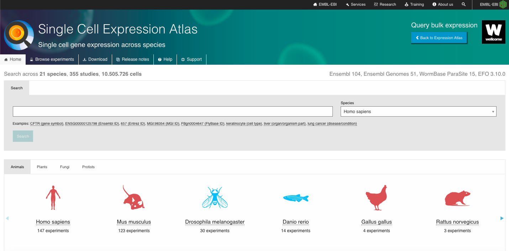
2. 搜索感兴趣的数据集：
- 选择一个感兴趣的物种或实验集合后，你会看到与该生物或项目相关的一系列实验列表。
- 你可以根据不同变量筛选实验，包括生物界别（organism Kingdom）、实验集合（Experiment Collection）和技术类型（Technology Type）。也可以进一步查看研究标题、实验因素（例如生物体部位、发育状态、年龄等）以及可用细胞数量等信息。
- 在这里还可以选择感兴趣的实验集合，并下载原始定量文件（Raw quantification files）、归一化计数文件（Normalised counts files）和实验设计文件（Experiment design file）。
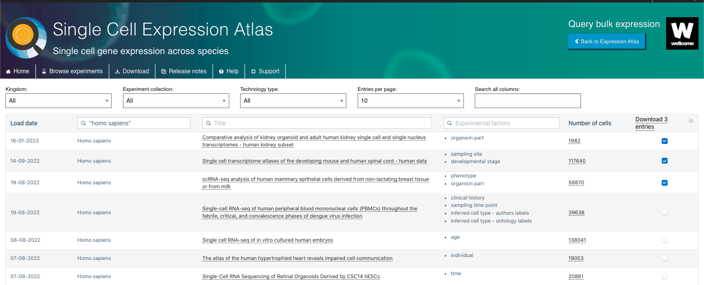
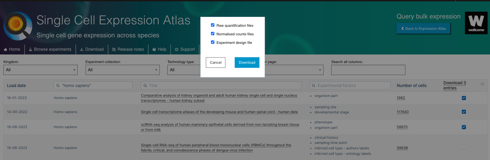
3. 可视化并探索可用数据：
- 选择感兴趣的基因或细胞类型，并在交互式浏览器中查看数据的不同方面。
- 根据 “Inferred cell type - ontology labels”（推断细胞类型本体标签）或 “Organism part”（生物体部位）筛选数据集。
- 选择一个感兴趣的数据集，进一步查看其中所有可用信息。
- 使用交互式图形（例如 t-SNE、热图）可视化基因表达谱。
- 查看 marker gene，并体验该资源库提供的其他实用功能。


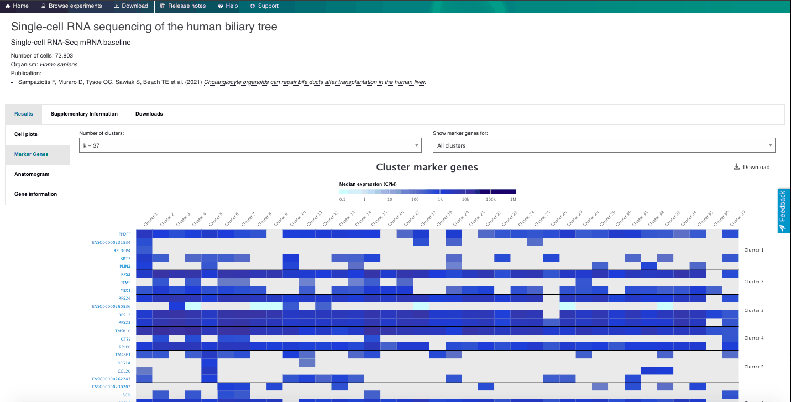


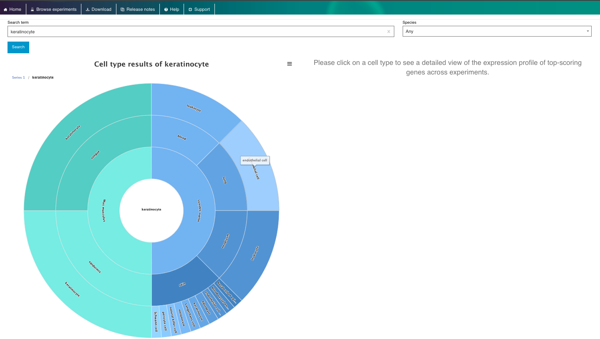
4. 现在可以开始自由探索这个资源库，尝试查看你感兴趣的数据和基因。 https://www.ebi.ac.uk/gxa/sc/home
Human Cell Atlas Data Portal
简要说明：Human Cell Atlas Data Portal 是一个基于网页的资源库，提供来自多种人体组织和细胞类型的大量单细胞 RNA-seq 数据集。它是 Human Cell Atlas 计划的主要数据门户，用户可以在其中探索、可视化并分析由该联盟生成的不同细胞类型、组织和条件下的基因表达谱。
实践练习：
1. 探索门户网站的通用界面：
- 打开 Human Cell Atlas Data Portal 网站：https://data.humancellatlas.org/
- 浏览网站的基本功能，查看可用数据以及如何向该平台贡献数据。

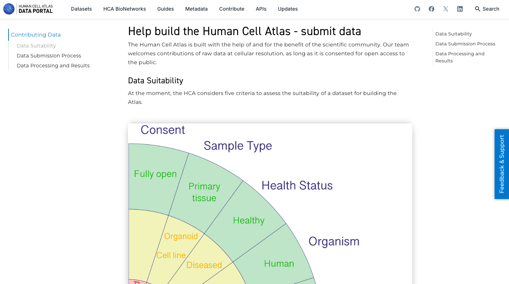
2. 搜索并探索感兴趣的数据集：
- 浏览可用数据集，查看其中的 Projects、Samples 和 Files。使用平台提供的筛选器进行更精确的筛选。
- 选择某个具体数据集后，依次查看该数据集的 Overview、Metadata、Matrices、Download 和 Export 标签页。
- 检查该数据集是否支持在其他分析门户中进一步探索，例如 UCSC Genome Browser 或 CELLXGENE。
- 查看是否可以将可用数据导出到 Terra 云平台进行分析。请注意，Terra 是一个独立的第三方私有平台。
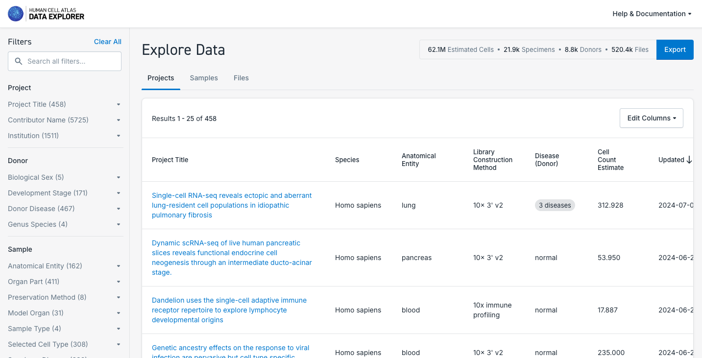

3. 搜索并探索 Human Cell Atlas 各 Bionetwork 生成的图谱：
- 注意，每个 Bionetwork 都可能包含数据集，但目前只有 Lung 和 Nervous System 提供了统一图谱。
- 浏览不同的 bionetwork，查看其中可用的数据和图谱。
- 探索这些图谱组成部分的具体特征，例如组织数量、疾病状态、细胞数量，以及是否可以在 CELLxGENE 中进一步探索或下载数据。
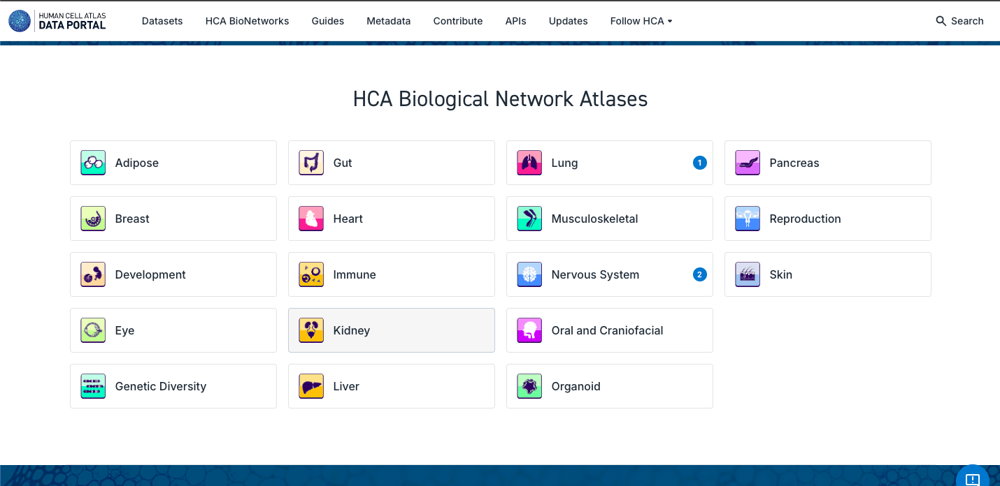
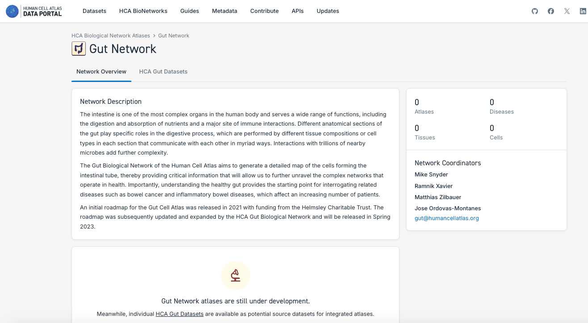

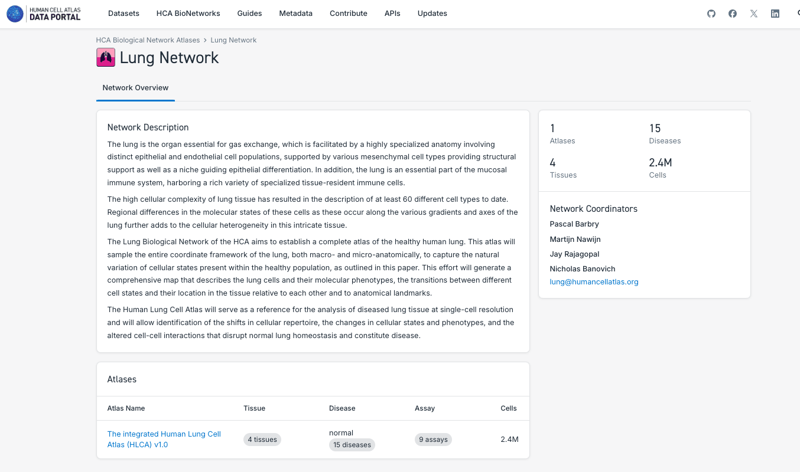
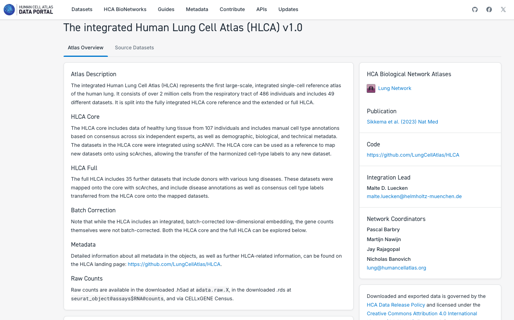
4. 阅读可用指南，进一步了解 HCA Data Portal 的各项功能和不同组成部分：

5. 现在可以开始自由探索这个资源库，尝试查看你感兴趣的数据和基因。 https://data.humancellatlas.org/
CellxGENE
简要说明：CELLxGENE 是由 Chan Zuckerberg Initiative（CZI）开发的网页门户，用于交互式探索和分析单细胞 RNA-seq 数据。它提供了友好的用户界面，可用于可视化并比较不同细胞类型、组织和条件下的基因表达谱。
实践练习:
1. 探索门户网站的通用界面:
- 打开 CELLxGENE 网站: https://cellxgene.cziscience.com/
- CELLxGENE 提供了多种工具，帮助你进一步探索和分析单细胞数据。
- 浏览可用的 Collections 和 Datasets，并选择一个感兴趣的数据集继续深入探索。你可以使用 “Filters” 功能，按照不同维度筛选数据，例如细胞类型、疾病、自报族群、性别等。

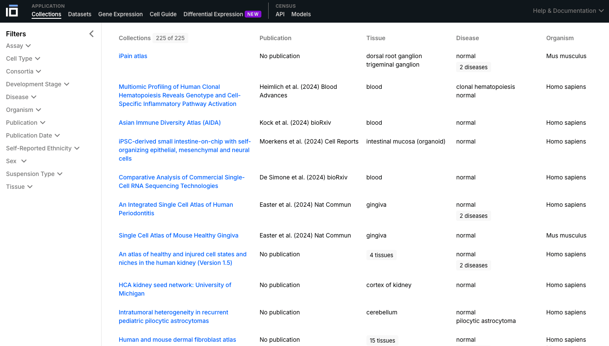
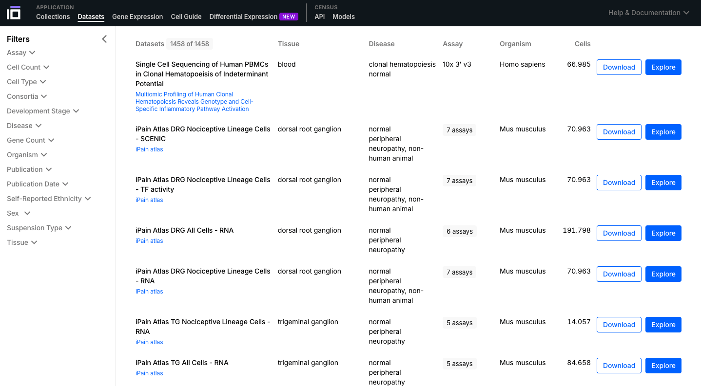
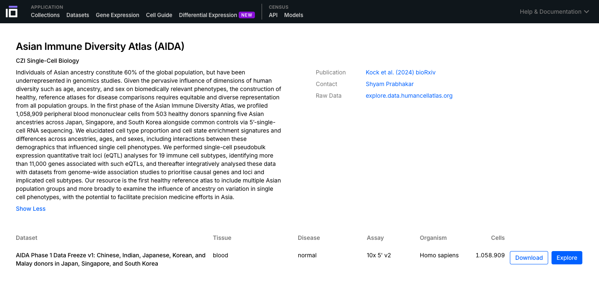
2. 探索感兴趣的数据集：
- 查看平台提供的不同功能。浏览不同类别，并根据细胞类型、发育阶段、族群、性别、疾病状态（如有）等信息为细胞着色。
- 尝试与细胞图进行交互，探索不同图形，并按照你的分析偏好获得不同的数据可视化结果。
- 选择两组你感兴趣的细胞，识别排名靠前的差异表达基因。分组方式可以根据你的研究问题决定，例如细胞类型、性别、疾病状态等。随后尝试改变某个感兴趣差异表达基因的颜色显示。
- 继续尝试平台中的不同功能，进一步探索你选择的数据集。
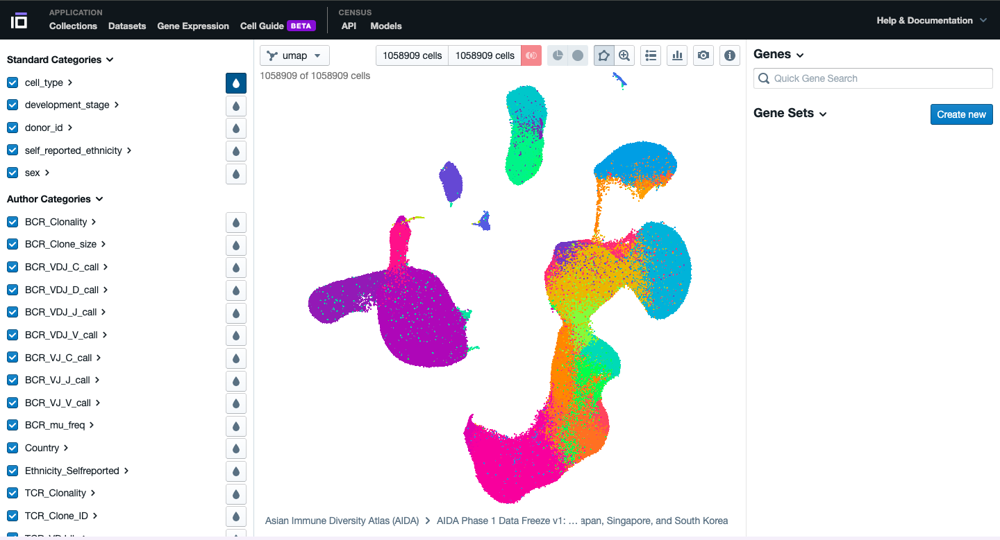
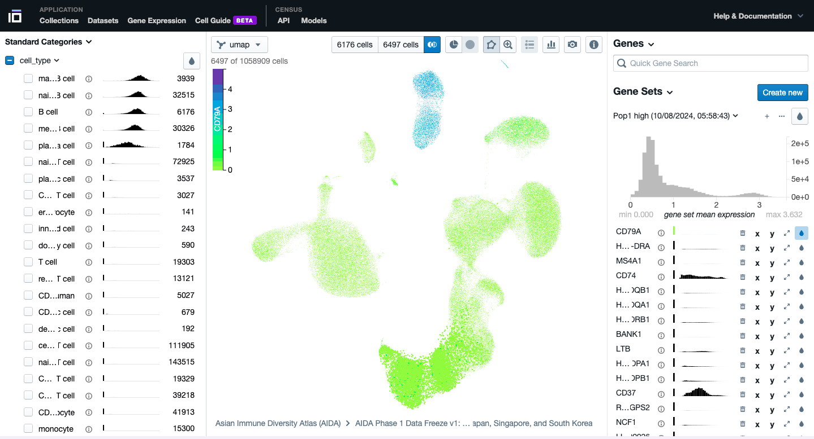
3. 探索基因表达功能：
- 根据筛选器选择感兴趣的数据集；加入感兴趣的基因列表，并查看这些基因在不同细胞类型中的表达情况。
- 观察图形中的表达水平，以及表达该基因的细胞比例。
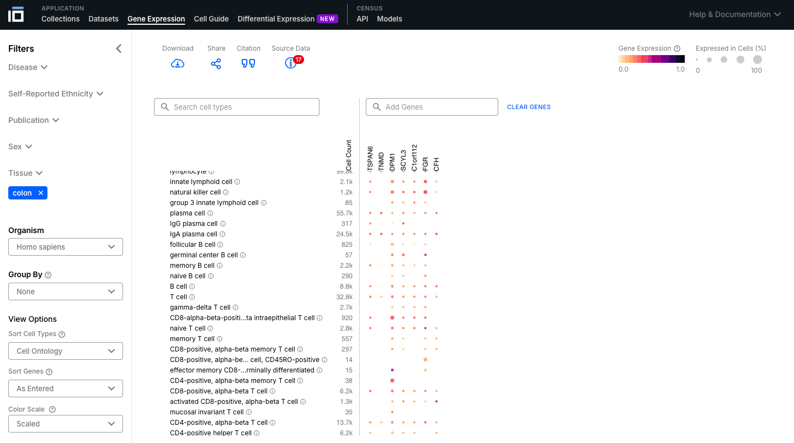
4. 探索 Cell Guide 功能：
- 选择感兴趣的细胞或组织，并沿其本体结构继续浏览。
- 细胞可能包含不同亚型，因此需要基于本体进行分类。
- 细胞本体（Cell Ontology, CL）是一套用于描述和归类细胞类型的标准化框架，依据细胞特征、功能和相互关系定义细胞类型。它为不同物种、组织和数据集中的细胞类型定义与注释提供了统一术语。
- 浏览你感兴趣的细胞或组织，查看其描述、本体关系、marker gene 和可用数据。
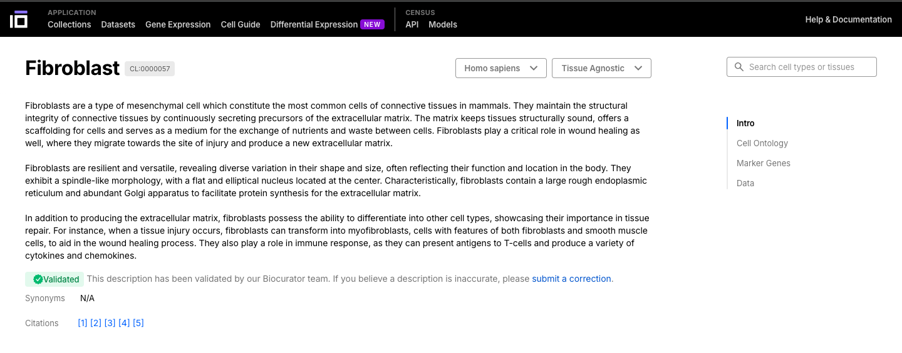
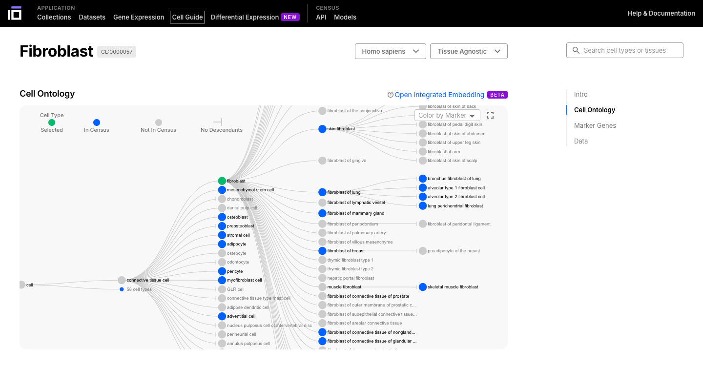
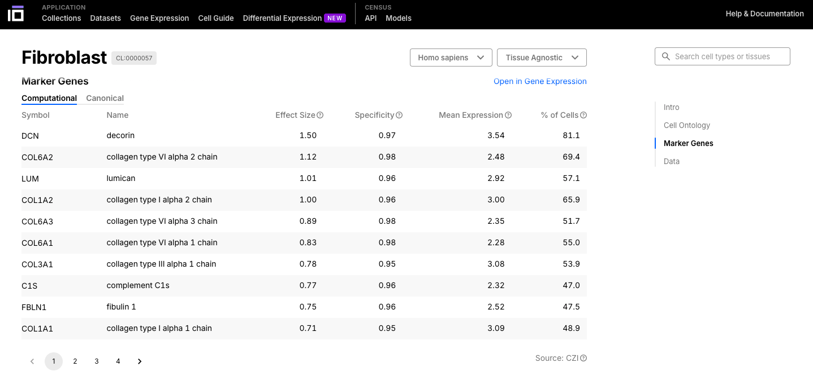
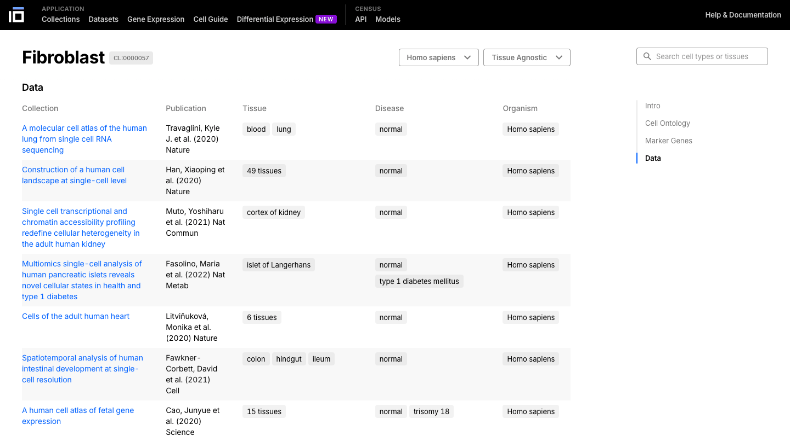
5. 探索差异表达功能：
- 根据生物体、组织、细胞类型、疾病、族群、性别等可用选项，选择你想进行差异表达分析的分组。
- 在这个示例中，我们在结肠来源的 B 细胞中，根据性别识别差异表达基因。
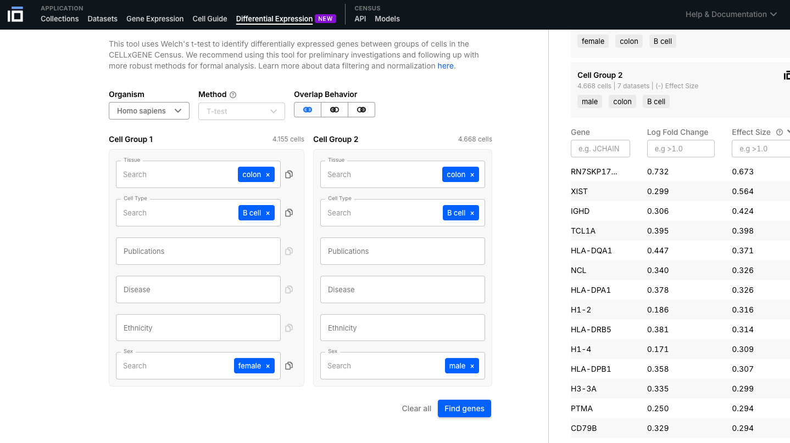
6. 探索 CELLxGENE Census：
- 熟悉 Census 平台。该平台允许你访问、查询和分析 CELLxGENE 中的全部单细胞 RNA 数据。

7. CELLxGENE Census:
- 现在可以开始自由探索这个资源库，尝试查看你感兴趣的数据和基因。 https://cellxgene.cziscience.com/
Panglao DB
简要说明:PanglaoDB 是一个面向科研群体的数据库，用于探索小鼠和人类的单细胞 RNA 测序实验。该平台整合了多个研究的数据，并通过统一框架呈现。虽然该数据库目前已经停止更新，但它仍然非常适合用来查询和探索 marker gene。
实践练习:
1. 探索门户网站的通用界面:
- 打开 PanglaoDB 网站: https://panglaodb.se/
- 浏览 Search 相关选项，探索该数据资源库。
- 你可以评估感兴趣基因在不同细胞类型中的表达。
- 也可以查看感兴趣细胞类型对应的细胞 marker。

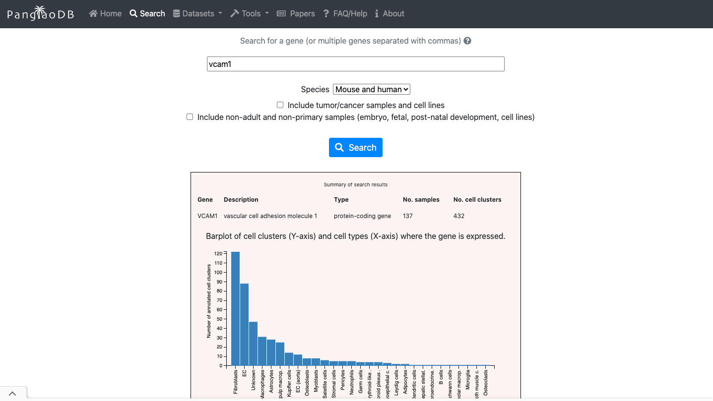

2. 现在可以开始自由探索这个资源库，尝试查看你感兴趣的数据和基因。 https://panglaodb.se/
CellTypist
简要说明:CellTypist 是一个基于网页的平台，用于辅助细胞类型识别、分类和注释。它为研究人员提供了友好的界面，可用于在自己的数据中注释和分类细胞类型。
实践练习:
1. 探索门户网站的通用界面：
- 打开 CellTypist 网站： https://www.celxltypist.org/
- 浏览可用的 Encyclopedia。选择你感兴趣的一类细胞并进一步探索。
- 在 “Resources” 中浏览可用模型；查看平台覆盖的器官，并了解如何获取 Python 软件包。
- 在 “Home” 页面中尝试用于注释自有数据的自动化工具。
- 阅读可用教程，深入了解该平台的功能。


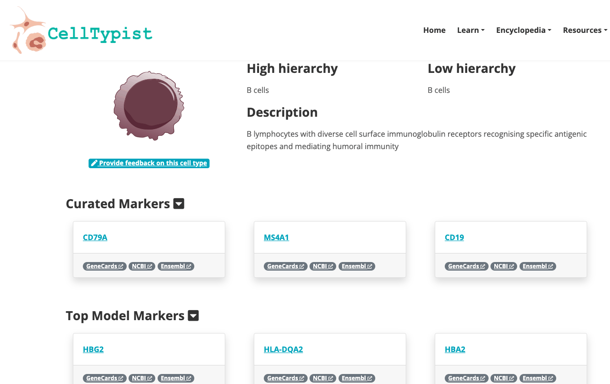

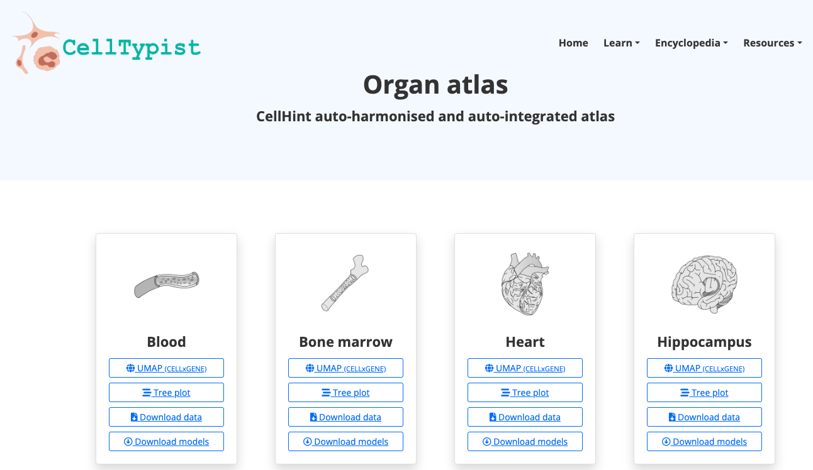

2. 现在可以开始自由探索这个平台，尝试查看你感兴趣的数据和基因。 https://www.celltypist.org/
GEO (Gene Expression Omnibus)
简要说明：GEO 是一个综合性公共数据库，用于归档并免费分发微阵列、下一代测序以及其他高通量功能基因组学数据。它是研究人员的重要资源，有助于发现关于基因功能、调控和表达的新线索，并支持数据复用。
实践练习:
1. 探索门户网站的通用界面:
- 打开 GEO 网站: https://www.ncbi.nlm.nih.gov/geo/
- 搜索一个感兴趣的数据集，例如可以使用关键词: "single cell heart"
- 浏览与心脏单细胞实验相关的公共数据集（或与你使用的关键词相关的数据集）。选择其中一个研究，获取该研究的更多信息。
- 浏览该研究中可用的样本。
- 评估这些数据在提交时是否遵循了 FAIR 原则。

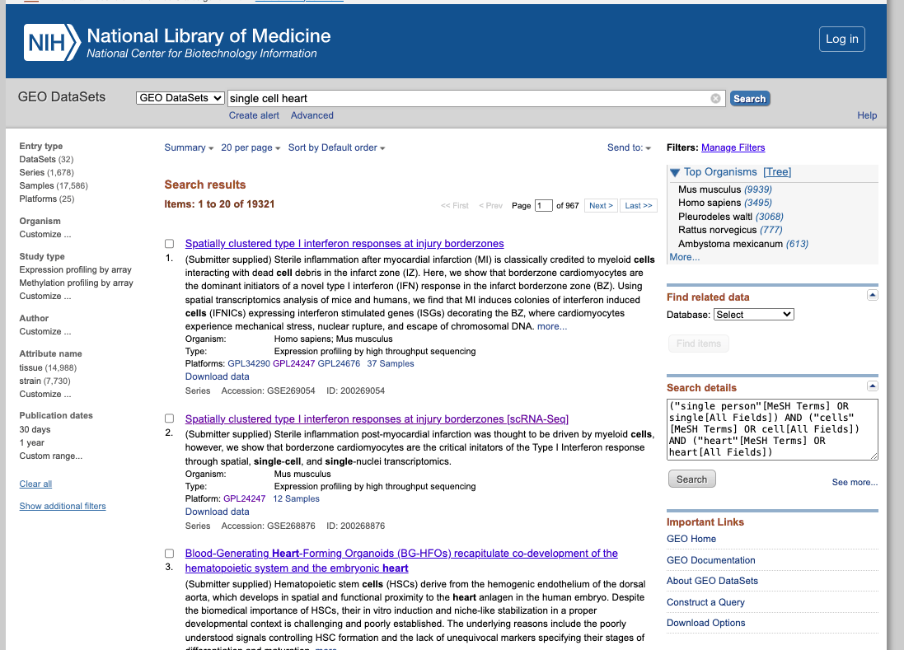
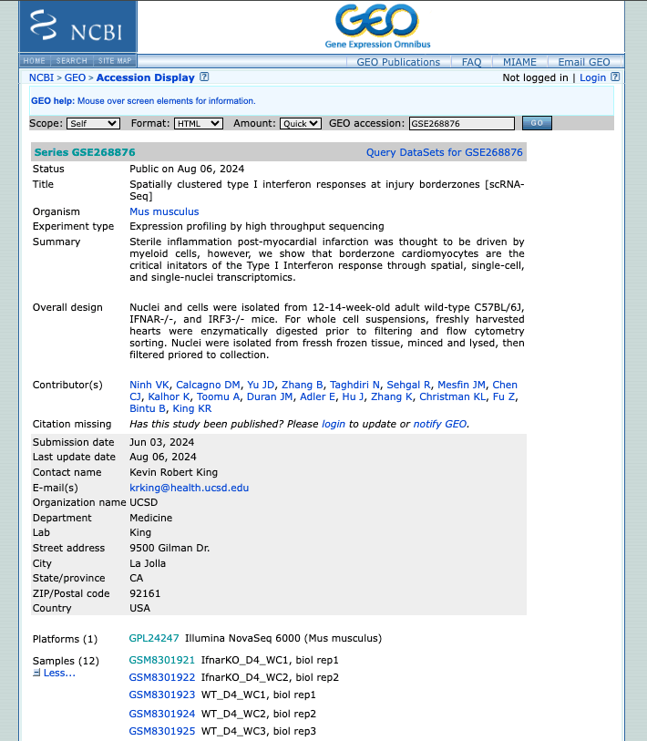
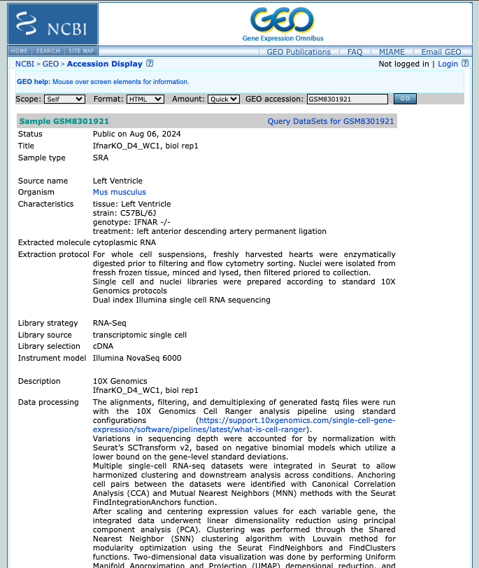
2. 现在可以开始自由探索这个平台，尝试查看你感兴趣的数据和基因。 https://www.ncbi.nlm.nih.gov/geo/
SRA (Sequence Read Archive)
简要说明:SRA 是一个综合性公共数据库，用于归档并免费分发高通量测序数据，包括 RNA-seq、DNA-seq 以及其他形式的下一代测序（NGS）数据。
实践练习:
1. 探索门户网站的通用界面:
- 打开 SRA 网站: https://www.ncbi.nlm.nih.gov/sra
- 搜索一个感兴趣的数据集，例如可以使用关键词
- 根据数据来源、测序平台、目标物种或其他可用特征筛选结果。
- 浏览与心脏单细胞实验相关的公共数据集（或与你使用的关键词相关的数据集）。选择其中一个研究，获取该研究的更多信息。
- 浏览该研究中可用的样本。
- 评估这些数据在提交时是否遵循了 FAIR 原则。
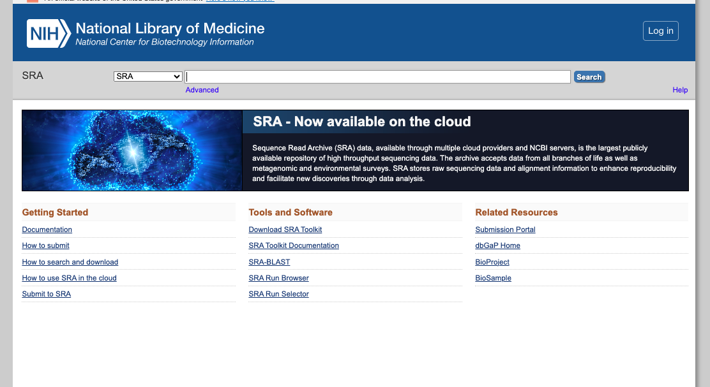
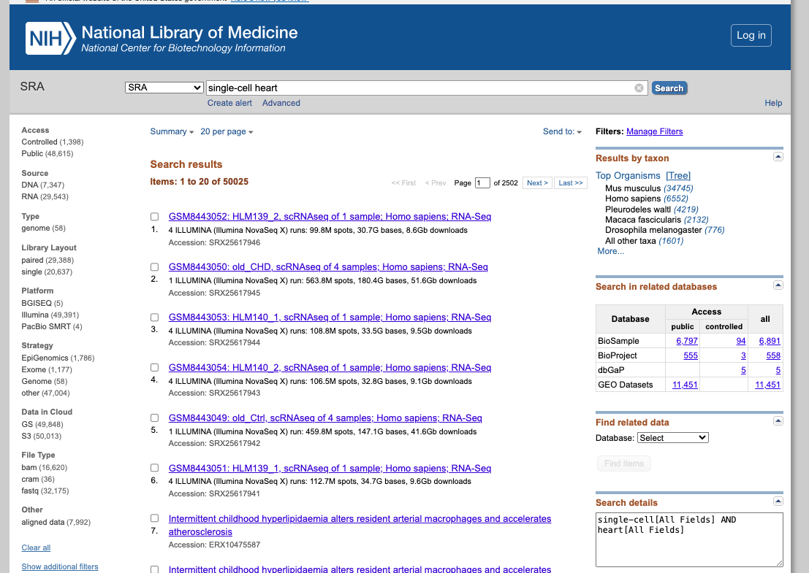

2. 现在可以开始自由探索这个平台，尝试查看你感兴趣的数据和基因。 https://www.ncbi.nlm.nih.gov/sra
说明:
此外，还有 SRA Explorer 这个交互式 SRA 数据可视化工具。它可以帮助用户浏览并访问 SRA 中保存的原始数据，从而更高效地搜索和下载数据。